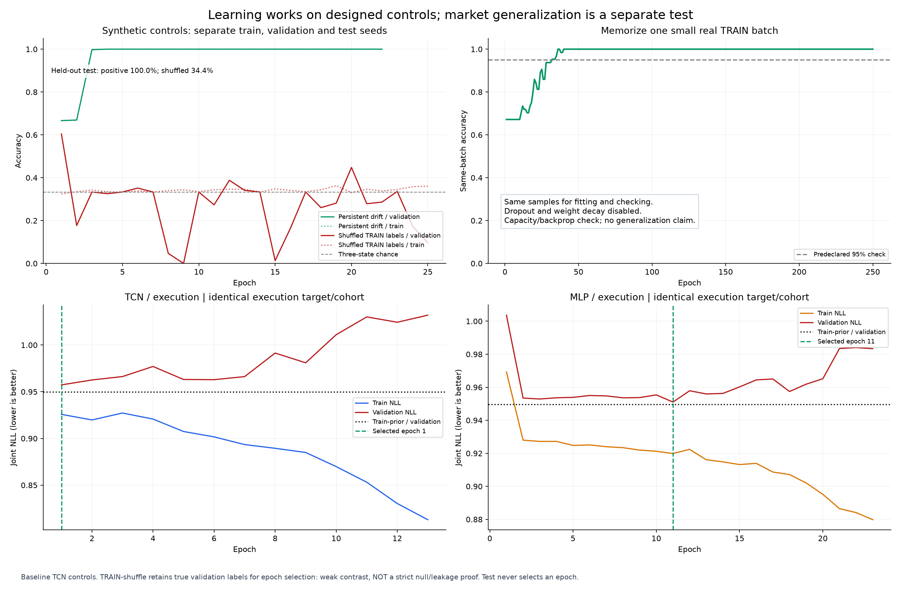
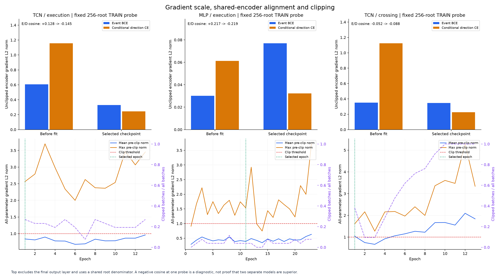
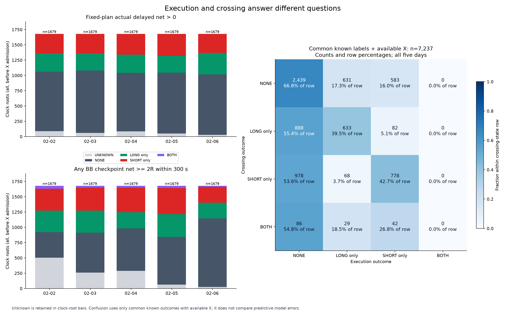
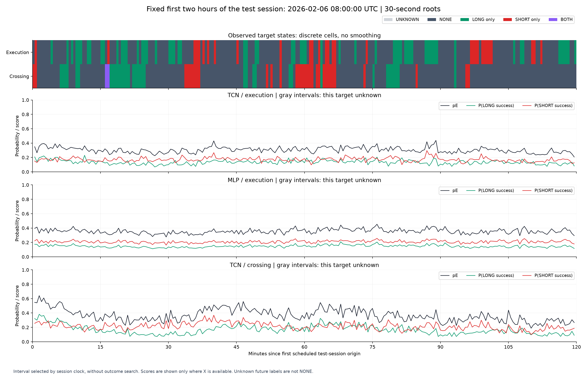
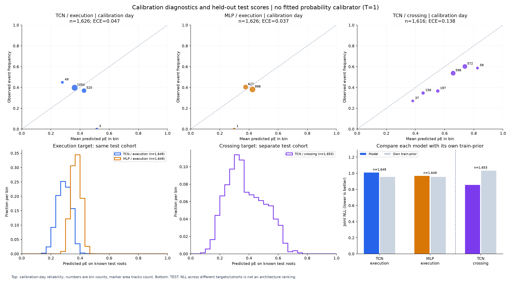
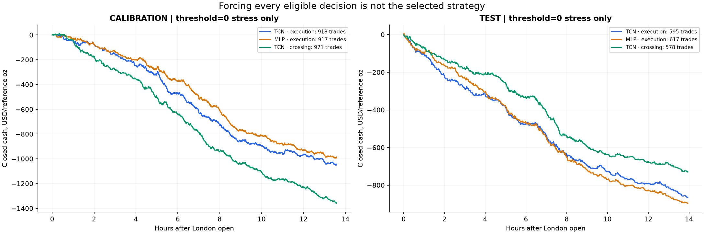

22 октября 2026 · GCJ6, 2–6 февраля · codex/opportunity-pipeline-v1 · воспроизводимый инженерный опыт
Модель умеет учиться. Исполнимая возможность пока остаётся сложной целью.
Получен рабочий научный pipeline. Один общий интерфейс данных, архитектуры, таргета и loss; отдельный causal replay; проверки градиентов и обучаемости; сохранённые конфигурации и результаты. Реальные fits показывают важное разделение: событие на карте пересечений частично распознаётся, но точный успех короткой сделки и направление не получили подтверждённого переноса. Все выбранные политики остались в WAIT.
Что получилось на реальных данных
NLL сравнивается с собственным train-prior на той же когорте. Строку crossing нельзя напрямую ранжировать против execution по NLL: это разные события и немного разные наборы roots. На crossing event AUC=0,692, но conditional direction NLL хуже prior. Следовательно, полезность event-головы не переносится автоматически в выбор LONG/SHORT.
На calibration-дне crossing-модель при заранее заданном пороге 0,5 сделала 204 последовательные сделки с net −150,30 USD на референсную унцию. Порог 0,35 дал 834 сделки и −1145,60. Это диагностическое применение crossing score к фиксированному исполнению, а не согласованный profit target. Выбранный по правилам порог — WAIT. У execution-моделей допустимые scores не достигли минимального порога 0,35. Нулевая кривая выбранной политики означает отсутствие сделок.
Неделя уже исследовалась ранее. Разделение по времени предотвращает использование test в fit/selection этой процедуры, но не превращает эти дни в новый слепой holdout. Один seed и пять дней не позволяют выбрать окончательную архитектуру или сделать статистический вывод о торговом преимуществе.
Один ясный контракт: X → outcome → loss → решение
- X в момент t: явный allowlist 81 признака; значения, finite masks и padding. Будущие crossing IDs, time-to-hit, support-until и метки исключены. Все 8395 исходных roots сохранены; 60 не имеют feature origin. Scaler обучается только на уникальных строках train windows.
- Исполнимый target: для LONG и SHORT по отдельности вход на первой поддержанной котировке строго после t+100 ms. На net контролируются TAKE +2R, STOP −R, таймер ровно через 300 s после entry. Каждый выход имеет 100 ms задержку и timeout 2 s. LONG покупает ask и продаёт bid; SHORT наоборот; комиссия 0,30 USD/oz roundtrip вычитается один раз.
- Метка: yL=1[actual netL>0], yS=1[actual netS>0]. Joint state NONE/L_ONLY/S_ONLY/BOTH известен только при COMPLETE обеих сторон. UNKNOWN и EMPTY не превращаются в отрицательный пример.
- Факторизация: E=1[y≠NONE], D∈{L_ONLY,S_ONLY,BOTH} при E=1. Loss = BCE(E) + 1[E]·CE(D), делённый на общее число известных roots. Предсказание E не выключает direction gradient. p(L)=p(E)[p(D=L_ONLY|E)+p(D=BOTH|E)]; аналогично SHORT.
- Policy: выбирается сторона с большим p(side), если score проходит заранее заданный threshold. Одновременно одна позиция. При выбранном CENSORED исходе replay останавливается как неполный; такие roots не исключаются задним числом.
Исправлены реальные дефекты: wall-clock TIME вместо ожидания новой котировки, проверка support внутри pending перед timeout, обход validation прямым SimulationConfig, silent-ignore source paths и невалидные NaN probabilities/outcomes. Старый replay сохранён отдельно; используется execution_clock_v2. 100 независимых scalar-проверок на полных котировках совпали по времени, статусам и деньгам, максимальная денежная ошибка 0. Это taker BBO-модель без гарантии глубины, очереди и market impact.
Градиент и обучаемость проверены отдельно от рынка
Контроль с наблюдаемым прошлым дрейфом и независимыми будущими инновациями размечен тем же симулятором: на 384 новых эпизодах accuracy 100%. Намеренная подгонка 64 real train roots: 100%. Дополнительный null с независимым перемешиванием labels в train, validation и test: accuracy 33.59%, event AUC 0.507. Это проверки механики, не торговые результаты.
Изначальный TRAIN-only shuffle дал accuracy 34,38%, но event AUC 0,702: в нём checkpoint выбирался по настоящим validation labels. Поэтому он сохранён как слабый контраст. Строгий относительно этой ошибки дополнительный null находится в independent_null.json; один случайный null всё равно не является доказательством отсутствия утечки или market p-value.

TCN продолжает уменьшать train NLL, когда validation уже ухудшается. Увеличение числа эпох не исправляет этот разрыв.

Измерены конечные ненулевые градиенты event и direction, их нормы и clipping. У execution TCN cosine на фиксированном train probe меняется +0,128 → −0,145. Одна отрицательная проекция не доказывает пользу двух отдельных моделей.
Как выглядит цель: частые переключения или устойчивая волна
Исполнимое четырёхклассовое состояние меняется в 44,27% соседних известных 30-секундных пар; бинарный event — в 41,88%. Медианная наблюдаемая серия — один root. Для crossing amplitude четырёхклассовая смена ≈22,11% среди roots с доступными X. На 7237 общих roots совпадает лишь 53,20% состояний и 56,25% event. В 1952 точках crossing положителен, но обе фиксированные исполнительные ветви не дали положительного net.
Более плавный прогноз не доказывает, что модель выучила плавный процесс. На графике оставлены исходные дискретные labels без сглаживания, а вероятности показаны отдельно. Иллюстрация фиксирована: первые два часа 6 февраля, независимо от качества прогноза. Crossing может описывать достижимое движение после временной просадки; жёсткий STOP может закрыть ту же ветвь раньше.

Примеров BOTH в fixed-plan execution нет; в crossing они существуют. Общая четырёхсостоянийная схема сохраняет эту разницу вместо искусственного p(SHORT)=1−p(LONG).

Детальная последовательность охватывает около 30 минут, текущий и предыдущий день представлены сводками. Гладкость вероятностей и точность распознавания события — разные измерения.

Calibration и test подписаны отдельно. AUC измеряет ранжирование; threshold требует соответствия score экономическому событию и величинам выигрыша/потери.
Гиперпараметры и измеренные ограничения
Исполнение существенно меняет барьеры. Медианное удержание 15,69 s; 64,22% COMPLETE trials закрываются быстрее 30 s. 36,66% TAKE exits заканчиваются ниже +2R, 59,83% STOP exits — глубже −R. Эти отклонения объединяют перескок барьера на первой публикации и движение за задержку; это не отдельная оценка slippage от latency.
Богатство признаков подключено, но его полезность не доказана. Все 81 allowlisted значения поступают в модель, однако внутридневной DOM/MBO не представлен как подробный поток. В первый день STFT отсутствует примерно в 30,7% roots, BB M9 — в 41,7%; в последний день pressure-change пропущен примерно в трети. Known masks предотвращают ложные нули, но сами пропуски и их распределение между днями остаются источником сдвига. Нужен отдельный grouped-ablation опыт, чтобы утверждать, какие семьи использованы моделью с пользой.

Дополнительная проверка после fit: threshold=0 принудительно использует большую из двух сторон. Она не участвует в выборе модели/порога. Крест обозначает цензурированное продолжение, поэтому такой prefix нельзя называть полным дневным результатом. Настоящие выбранные политики — WAIT.
Что уже можно менять
Одинаковые hidden/layers не делают архитектуры равными: при 163 каналах MLP имеет 8548 параметров и RF=1, CNN 25124 и RF=9 roots (4 min), TCN 30212 и RF=61 roots (30 min), LSTM 50692 и всё переданное окно, без памяти между окнами. Эти параметры записываются в receipt.
.venv\Scripts\python.exe -m scripts.prepare_research_execution --config configs/research/opportunity_pipeline_v1.json --output data/derived/scientific_pipeline_v1/execution_clock_v2
.venv\Scripts\python.exe -m scripts.run_opportunity_pipeline --config configs/research/opportunity_pipeline_v1.json --run-id my_new_tcn
.venv\Scripts\python.exe -m scripts.run_opportunity_pipeline --config configs/research/opportunity_pipeline_v1.json --run-id my_lstm --set model.architecture=lstm
.venv\Scripts\python.exe -m scripts.run_opportunity_pipeline --config configs/research/opportunity_pipeline_v1.json --run-id my_focal --set loss.event_loss=focal --set loss.gamma=1.0
.venv\Scripts\python.exe -m scripts.run_opportunity_pipeline --config configs/research/opportunity_pipeline_v1.json --run-id my_vwap --set target.kind=crossing_amplitude --set target.family=VWAP
.venv\Scripts\python.exe -m pytest tests/test_research_models.py tests/test_research_data.py tests/test_research_simulation.py tests/test_research_controls.py tests/test_research_training.py tests/test_crossing_map.py tests/test_flow_context.py -q
Существующие run directories неизменяемы: повтор требует нового run_id. Новый replay-рецепт требует нового execution_dir и подготовки cache. Scales BB/VWAP берутся из существующего банка M1/M3/M5/M6/M9; смена scales сама по себе не создаёт новые causal признаки.
Какой следующий опыт следует из результата
- Согласовать скорость X с экономическим горизонтом. Ввести короткий поток 1–5 s с объёмом/агрессией/спредом и оставить отдельный медленный контекст London/VWAP/STFT. Сравнить на одинаковых origins и новых временных блоках. В первую очередь проверить распределение holding/cost, затем выбирать cadence.
- Сохранить структурный event как отдельную обучаемую цель. Crossing E уже показывает ранжирование. Добавить conditional time/risk/payoff, чтобы модель различала «движение будет» и «его можно пережить и исполнить». Net-only бинарная голова теряет размер выигрыша и потерь; threshold по win probability не равен максимизации expected net.
- Провести ограниченный опыт риска. Заранее задать сетку R/стоимость и барьеров, контролируя median holding и censored долю. Цель — убрать навязанную микро-лотерею от слишком близкого net stop; изменение правила не является найденной прибылью.
- Focal пока не усиливать. BCE остаётся контрольным proper loss. Перед gamma>0 измерить вклад easy/hard примеров и градиенты по классам; разумный будущий небольшой тест gamma 0 / 0,5 / 1, с отдельной калибровкой. Здесь evidence указывает прежде всего на temporal resolution, cost geometry, нехватку независимых дней и direction ambiguity.
- Разделять полные LONG/SHORT модели после проверки negative transfer. Сейчас измерен E/D cosine одного probe, а не конфликт LONG/SHORT задач. Нужны несколько seed и временных блоков, сопоставимые parameter/history budgets, сравнение shared encoder и отдельных side encoders. Mamba-2 пока не реализована; её нельзя объявить решением по этим графикам.
Проверяемые артефакты
49 новых unit tests +13 regression tests старого crossing/flow интерфейса прошли; дополнительно 100 независимых raw-quote сравнений. На source level проверены causal prefixes, реальные receptive fields, finite differences loss, нулевой unknown gradient, train-only scaler, timeouts/support, one-position accounting и отсутствие выбора по будущей полноте.
Базовый config · Trainer и account · Симулятор · CLI · Данные и bottlenecks · Контроли · Независимый null · Execution manifest · Графики и hashes · Визуальный аудит Sol 6.1 · Итоговый receipt
Веса, predictions, scaler и полные training histories сохранены локально в data/derived/scientific_pipeline_v1/runs. Экономические единицы — USD на референсную унцию; account sizing, контрактный множитель, queue/depth/impact, несколько месяцев и live-проверка в этот опыт не входят.